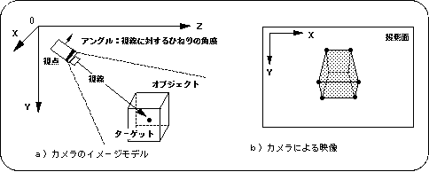
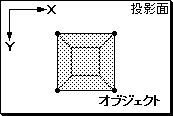
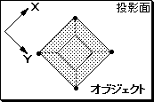
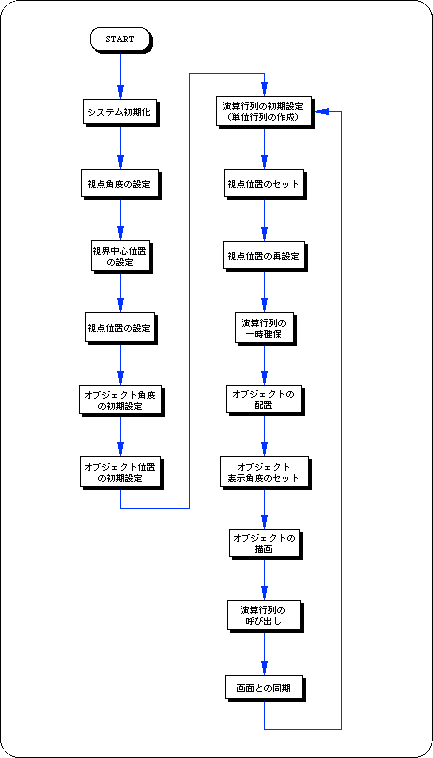

★SGL User's Manual
★PROGRAMMER'S TUTORIAL
★SGL User's Manual
★PROGRAMMER'S TUTORIAL
本章では、カメラの定義とその操作法を解説します。
カメラとは、３Ｄ空間内のどこから、どのように空間を見渡すかを定義するもので、
ビューイング変換とも呼ばれます。カメラは、視点・視線・アングル角の３つの要素から成り立っており、
この３つの要素を変化させることで、空間内を自由に投影面に描画することができます。
ただし、２）の場合においても、内部的には１）の方法を使用し、見た目カメラが空間内を自由に移動しているように見えるに過ぎません。
より細かいカメラ設定を行いたい場合は（ここでは解説しませんが）、１）の方法を使用するようにしてください。処理速度の観点からも１）の方がより効率よく視点及び視線に変更を加える事ができます。
図6-1 カメラのイメージモデル

 |  |
| a)カメラの上方をＹ軸に合わせた場合 | b)カメラの上方をＹ軸に対して−４５度傾けた場合 （Ｚ軸回転で−４５度） |
/*----------------------------------------------------------------------*/
/* Camera Action */
/*----------------------------------------------------------------------*/
#include "sgl.h"
#define POS_Z 100.0
typedef struct cam{
FIXED pos[XYZ];
FIXED target[XYZ];
ANGLE ang[XYZ];
} CAMERA;
extern PDATA PD_CUBE;
static FIXED cubepos[][3] = {
POStoFIXED( 20 , 0 , 270) ,
POStoFIXED(-70 , 0 , 270) ,
POStoFIXED( 40 , 0 , 350) ,
POStoFIXED(-60 , 0 , 370)
};
void dispCube(FIXED pos[XYZ])
{
slPushMatrix();
{
slTranslate(pos[X] , pos[Y] , pos[Z]);
slPutPolygon(&PD_CUBE);
}
slPopMatrix();
}
void ss_main(void)
{
static ANGLE ang[XYZ];
static CAMERA cmbuf;
static ANGLE tmp = DEGtoANG(0.0);
slInitSystem(TV_320x224,NULL,1);
slPrint("Sample program 6.3" , slLocate(9,2));
cmbuf.ang[X] = cmbuf.ang[Y] = cmbuf.ang[Z] = DEGtoANG(0.0);
cmbuf.target[X] = cmbuf.target[Y] = toFIXED(0.0);
cmbuf.target[Z] = toFIXED(320.0);
cmbuf.pos[X] = toFIXED( 0.0);
cmbuf.pos[Y] = toFIXED(-20.0);
cmbuf.pos[Z] = toFIXED( 0.0);
while(-1){
slUnitMatrix(CURRENT);
slLookAt(cmbuf.pos , cmbuf.target , cmbuf.ang[Z]);
tmp += DEGtoANG(2.0);
cmbuf.pos[X] = POS_Z * slCos(tmp);
cmbuf.pos[Z] = POS_Z * slSin(tmp);
dispCube(cubepos[0]);
dispCube(cubepos[1]);
dispCube(cubepos[2]);
dispCube(cubepos[3]);
slSynch();
}
}

関数型 | 関数名 | パラメータ | 機 能 |
|---|---|---|---|
| void | slLookAt | FIXED *camera,*target,ANGLE angz | 視線マトリクスをカレントマトリクスに掛ける |
★SGL User's Manual
★PROGRAMMER'S TUTORIAL